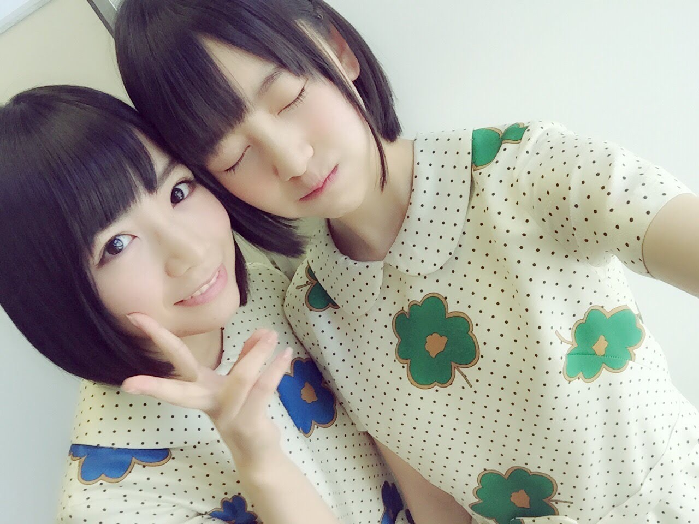

2020/0328Sat大切な存在は想うと苦しくなる

5年前

現在
こうみると堀北コンビも大人っぽくなりました
中身は変わってないけど...笑
最近も、楽屋で日奈子にいたずらされて私が日奈子を追いかけ回して後ろから抱きついてワーキャーしてて
みんなに2人は小学生男子みたいって笑われてました笑
ということで、
今日で2期生が結成して7周年になりました☺︎
いつも2期生を応援してくださる皆さん、ありがとうございます!
アナスターシャの反響や2期生ライブ配信などみなさんの熱量や声援をひしひしと感じて嬉しく思います
それぞれがまだ未熟でぶつかる時もあったし素直になれない時とかもあったけど何だかんだ仲良くて、支えあえて思い合えていて、
卒業生も含め2期生がこのメンバーで本当に良かったなぁと思います
真面目で繊細で強がりで泣き虫で優しくて面白くて
魅力しかない真っ直ぐな2期生のみんなが大好きです
いろんな経験を一緒にしてきた仲間だからこそ分かり合えることがあるし同期の存在がなかったら私はすぐに辞めていたかもなぁと思います
いつも、ありがとう。
恥ずかしいから直接は言わないけど
不器用な私を受け入れてくれて、ありがとう
みんなが幸せになれますように
私も頑張らなきゃ
これからも2期生、そして乃木坂46の応援をよろしくお願いします!

そして勝手に受けたオーディションから
今日までいつも応援してそばで支えてくれた家族にもありがとうを伝えたいです
こんな私だけど活動を通してたくさん恩返しができるようにもっともっと頑張るね
2020年3月28日 堀未央奈
2020/03/28 18:18


コメント(390)
アナスターシャ、乃木坂の全楽曲の中で一番のお気に入りです。今日初めてカラオケで歌いました(笑)
堀北コンビずっと仲良しでいてね。
(o^-^)
2期生7周年✩.*˚おめでとう!!
未央奈ちゃん。勝手にオーディションに
応募してくれてありがとう
未央奈ちゃん大好き
そして未央奈ちゃんと同じくらい
2期生のみんな(卒業生含めて)大好き
これからも頑張ってね︎☺︎
未央奈ちゃんも2期生も応援してるよ
次の更新も待ってます✩.*˚
追記です！
これからもずっと応援してるよ❤️
大好きです❤️！
これからもずっと2期生を推します‼︎
7周年本当におめでとう！
それぞれの個性が魅力的な二期生！
でもみんなが一つになると本当に信じられないくらいの
パワーや感動を与えてくれる。
少なくてもそのパワーに僕は何度も救われました！
未央奈の言う通り二期生は魅力的で真っ直ぐだよね！
今も昔も変わらない堀北コンビ！大好きです！
いつも沢山の笑顔とパワーをありがとう！
二期生大好きです！(^^)
2期生、結成7周年おめでとうございます
ぶつかったり、素直になれなかったり
色々あったでしょうけど
ちょっとやそっとで
崩れたりしないのが同志だと思います
これからも絆を大切にしてくださいな
5年前の堀北コンビ
初々しい(^_^)
これからも
ずっと応援していきます！
涙が出てきそう。。。
エモい！そして、深いな文章ー
堀北コンビは2期生のゴールデンコンビだと思う☆
小学生男子の2人、、最高じゃんw
いつかみんなも卒業する時が来ちゃうから、これからも１つ１つ2期生の貴重な時間を大事にしてね。
すでに、未央奈はたくさん頑張ってると思う！
家族や仲間、周りの人のために頑張るのも必要だと思うけど。
自分のための時間も大切にして欲しいと思いました！( ・∇・)
応援してますー！
ブログ更新ありがとーあちこちで桜がもうキレイに咲いてるね。
でわわわ。
一番ブログ頑張ってるみおなは２期生のリーダー！(^^)
最近は卒業も多くてファンとしてもしんどいけど、それでも、きっと悩みを持ちながら頑張ってるみおなを見てるとずっと応援していたい気持ちでいます。
これからもファンよ！
握手会でこれくらい伝えられる時間があったら良いのにと思ってしまう、くぅ、、
では！
堀北コンビ最高過ぎる!
初期の頃と比べると性格も少しずつ大人になってきてると思うよ
後輩が増えてきて先輩としての重圧は重いかもしれないけどこれからも頑張ってね！
未央奈ちゃん、2期生のみなさん
7周年おめでとうございます。
これからも、ずっと応援します。
みんな、がんばってね！
2期生はやっぱり尊いです！！今日もアナスターシャのMVをテレビで見てました！ＣＤも届きましたし！！これからも2期生の活躍とっても楽しみにしています！
あと未央奈のセンターまだかなあとずっと待ち望んでます！！
2期生の代表[生駒ちゃん]みたいに言われて来て、何かと大変だったと思います。掘り下げ中とか、ノギビンゴで頑張って2期生の活躍の場所を広げて来たよね。だから、凄く良い、ライブなんかで欠かせない楽曲のセンターを絢音ちゃんや、日奈子ちゃんが歌ってるよね。最近の2期生楽曲も良いなぁって思ってたけど、アナスターシャは本当に良くて、MV何回も見てるよ。
未央奈の凛とした表情、格好いいところが多くて、何回も見てます。
これからも、未央奈の活躍をバンバンみたいです。
頑張って下さい。2期生も頑張れ。
アナスターシャ大好きです。
今回のシングルで1番好きかも！
何回も聞いて、MV見てます(*´∀`*)
おめでとう！！！
時にはバラバラになるけれど、それでも心はひとつで、時には休んで、重い荷物はみんなで支えあえる二期生。
そんな二期生が大好きなんです。
と、アナスターシャのMVを見て改めて思った。
応援しててよかった。これからも応援したい。
そう思えるところが二期生の最大の魅力なのかもしれないね。
これからもずっと二期生ファンです。
7周年おめでとうございます！！！
ほりちゃんにいつも元気貰っています
これからも頑張ってください！！！
ずっと応援してます！！！
コロナには絶対に気をつけてください！
手洗いうがいは絶対にやってください！！！
7周年おめでとうございます！
これからも2期生の更なる飛躍を願っています！
2期生7周年おめでとう！！！
こーやって2期生が7年目を無事迎えられることが出来て良かったし、2期生LIVEがいつか行われることを願ってます！！
これからも2期生らしく突っ走ってください！
堀北コンビは楽しそう！なんか賑やかな感じがする！笑
体調には十分気をつけてください！
これからも頑張ってください！
2期生おめでとうございます！
こうして比べてみると
小学生とは言いませんが、
子供っぽさが残りますね。
7年ですか～
おめでとうございます。
ふふ。
照れ屋さんはっけ～～ん。
素敵な同期に出会えてよかったね
未央奈さんを好きになって乃木坂も好きになりました
ずっと見ていて２期生は本当に応援したくなる存在になっています
これからも推しの未央奈さんと２期生、乃木坂の活躍が楽しみで期待しています
これからも応援し続けます！！
ブログ更新ありがとう
そして2期生Happybirthday!!!
今までの2期も好きだけど今の2期はもっと好き☺️❤️
未央奈の笑顔めっちゃ好き
今は直接会えなくて応援することしかできないけど直接言える日が来たらおめでとうって言える日を楽しみにしてるね！！
これからももちろん2期のことも乃木坂のことも応援するよ！！
これからもお互い頑張ろ
次の更新も待ってるね〜！！
そして、2期生7歳のお誕生日おめでとう
卒業メンバーも増えてきているけど、残っているメンバー、卒業したメンバー11人をこれからも応援し続けます❗️
2期生が大好きです！堀未央奈が大好きです❤️
ずっと見ていると見た目の変化って分かりづらいものだけど、過去の映像なんかを見ると確かに大人っぽくなったなぁって感じる
ちょうど先週の土曜日、僕はある場所へ行ってきたよ。
ふふふー、どこだと思う？
ちらっと話には聞いていたけど、本当に風が強くて。
それに高さがあって、最初は上まで上るのにためらい、自分は高所恐怖症なんだと認識した。
でも、比較的すぐに慣れて、何度も上ったり下りたりしたよ。
僕はむかしから環境適応能力が高いのではないかと感じることが多々あった。
やっぱり慣れってすごいものだね
最初MVを見たときは外国のどこかかと思ったけど、ツイッターを見ていたら、首都圏のわりと近いところにあるという情報を見つけて驚いた！
なので、先週の土曜日に実際に行ってみたよ。
バスの本数は少なく、そこまで行くのにけっこう歩き、帰りはバス停まで真っ暗な夜道を歩いてきて少し大変だったけど。
でもなんか神聖というか、大げさに言うとジャングルの奥地で黄金の遺跡を発見したという感じ。
そうです、富津岬の明治百年記念展望塔。
いちばん上まで上ったら、あまりの風の強さに紙がバサバサっと空高く飛んで行った。
はっきりとは分からなかったけど、デジカメを出そうとしていた僕のカバンから出て行ったものである可能性がある
2期生のみんなは見たのかな。
海の向こうに富士山（たぶん）が見えて、そのすぐ横で海に夕陽が沈む瞬間がはっきりとリアルタイムで見えた。
ものすごい景色だった
自分以外にもたくさんの人がいて、ここが夕陽のベストスポットだとみんな知っていたんだね。
もしあのMVを見ていなかったら、僕がここに来ることは一生涯なかったかもしれない。
あの素晴らしい景色を見られたのは、2期生のみんなのおかげだね。
2期生たちが途中で諦めることなくここまで頑張ってきて、このMVに到達したからこそのことだよね。
本当にありがとう☆
コメント長くなってしまってごめんね。
最後になりましたが、2期生結成7周年おめでとう( ・∇・ﾉﾉ""8888
またねっ！
乃木坂を見るようになって1年半ほどと短い私ですが、今ではすっかり2期推しになってます。
2期生の皆が個性がバラバラですが、2期生という絆で1つな感じが好きです。それぞれに努力して、報われない時もあるかもしれませんが、それでもめげず、諦めず前に進んでいる姿に胸を打たれます。
8年目は2期生にとってもっと素敵な年になるように応援しています。
これからも頑張ってください。
7周年おめでとうございます
これからも頑張って下さい
更新頻度高くて嬉しい！！
7周年おめでとう！これからも頑張ってね！！
いつか二期生ライブ実現させてくださいね。二期生の皆さんの思い、卒業した皆さんの思い、ファンの思いがあれば、きっとできると信じてます。
そして、先行きが見えない中で、テレビや動画、ＳＮＳを通じて姿を見せてくれる乃木坂46の皆さんに励まされています。メンバーの皆さんも大きな影響を受けているのに、僕たちに元気を与えてくれることに本当に感謝です。
まさに今日は記念すべき日でもあるね
まだまだ乃木坂として頑張って！
これからも応援していきます
ブログ更新ありがとう
大好き！
2期生7周年おめでとう！！
このブログ読んでると、強い絆を感じるよ。
7年続けるって並大抵の事ではないと思うから…
これからもずっと未央奈の事,2期生の事,乃木坂の事応援するね！
ファンから見ても本当にこのメンバーで良かったと思います。
7周年を前に、アナスターシャという最高の曲を手に入れて、ファンも応援しがいかあります。
これからも仲良く頑張ってね
堀北コンビ応援します。
とにかく二期生が1番好きです。
これからも応援します。
仲間の存在っていいよね‼️
これからも2期生のみんなが幸せであるように、願います♡大好きー♡
さくらちゃんとあやめちゃんとでんちゃんと同じ愛知県出身の覇王です！
そして、2期生7周年おめでとう！
2期生のみんないつも元気もらってるよ！
これからもずっと応援するので、頑張ってね！
アナスターシャ大好きすぎて毎日聴いてます
忙しいはずなのに、755とか写真集のインスタとかブログ沢山更新してくれて本当に嬉しい
これからもずっと自慢の推しです
たまには岐阜にも帰ってきてね！
あとはコロナ、気をつけてね。収まったら握手会行きます！
唯一研究生から這い上がってきた2期生は強いし、ファンまでの
本当に2期生が好きで2期生を応援してる人が多い気がします。これからも2期生がいる限り応援します。7周年おめでとうございます
2期生7周年おめでとう！！
いろんな場所で活躍している2期生の皆さん
個性豊かで みんなで集まった時のワチャワチャ感
これからも楽しみ！！ 応援していきます！！
アナスターシャのMV観てます～
いつかライブで観られる 必ずその時が来ると信じて
コメントする